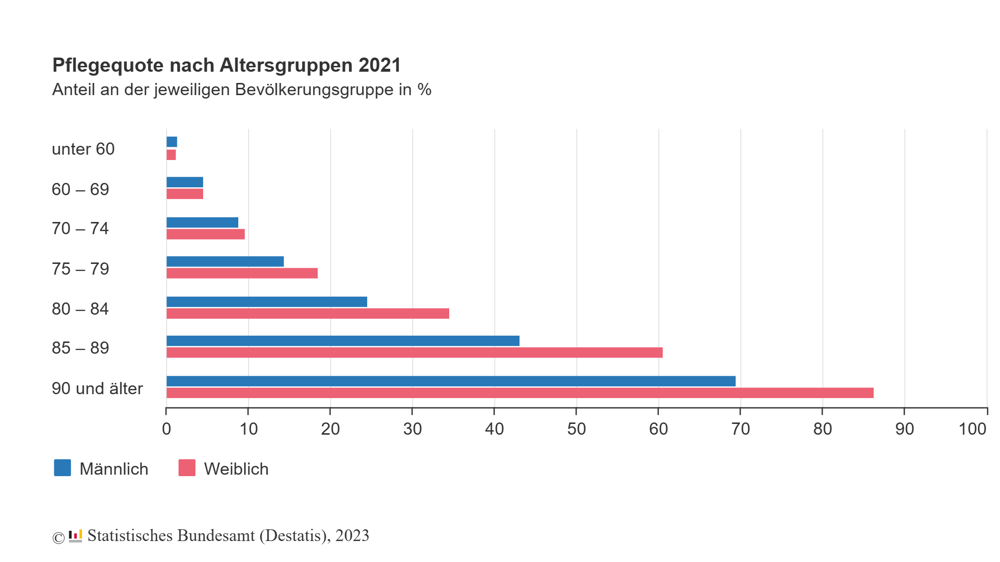

Good morning!
Nur das Schöne wird die Welt retten!
Fjodor Dostojewski
Nicht verzagen, Doc Alvers fragen!
Ute Hartenstein
Ihre zunehmende Bedeutung in Anbetracht des demographischen Wandels
Nicht verzagen, Doc Alvers fragen!
Kapitel 01
Zahlen, Prognosen und was sie für die Versorgung bedeuten
Nicht verzagen, Doc Alvers fragen!
26.615
Menschen in Deutschland sind über 100 Jahre alt
Stand: Ende 2023
4×
4 × mehr Frauen als Männer
unter den über 100-Jährigen
Tendenz steigend
Jahr für Jahr mehr Hundertjährige
80+
Auch die über 80-Jährigen
werden seit Jahren mehr
Nicht verzagen, Doc Alvers fragen!
Immer weniger
Pflegende in Krankenhäusern, Seniorenheimen und in der ambulanten Pflege
(Haus-)Ärztinnen und Ärzte
Immer mehr
(multi-)morbide und (hoch)betagte Menschen, die Versorgung brauchen
?
Nicht verzagen, Doc Alvers fragen!
Ab 90 sind rund 7 von 10 Männern und mehr als 8 von 10 Frauen pflegebedürftig
Pflegequote nach Altersgruppen 2021, Anteil an der jeweiligen Bevölkerungsgruppe
Quelle: Statistisches Bundesamt (Destatis), 2023

Nicht verzagen, Doc Alvers fragen!
Kapitel 02
Am Beispiel einer Praxis in Weinböhla
Nicht verzagen, Doc Alvers fragen!
2024 im Vergleich zu 2012 (Praxisübernahme)
+66 %
Patient:innen
2012
2024
insgesamt · 2012: 844
64 %
Rentner:innen
2012
2024
2012: 60 %
53 %
über 70 Jahre
2012
2024
2012: 46 %
15 %
mit Hausbesuch
2012
2024
ca. 200–300 pro Quartal · 2012: < 10 %
Team: 3 nichtärztliche Mitarbeiterinnen (Quereinsteigerinnen) · 3 ärztliche Mitarbeiter:innen (Teilzeit) · 1 MFA-Azubi
Hausbesuche im Team bei geriatrischen und palliativen Patient:innen an 4 Tagen pro Woche
Nicht verzagen, Doc Alvers fragen!
Langfristig: nicht wenige Tage wie in der Klinik, sondern Monate bis Jahrzehnte
Vertrauen: im besten Fall eine gute, vertrauensvolle Arzt-Patient-Beziehung
Kommunikation: Grundlage für Beratung in komplexen Situationen, auch am Lebensende
Vorsorge: Patientenverfügung, Vorsorgevollmacht und Notfallbögen
Palliativer Bedarf: am Lebensende erkennen, um optimal zu versorgen
Nicht verzagen, Doc Alvers fragen!
Kapitel 03
Wer versorgt wen – und was es noch braucht
Nicht verzagen, Doc Alvers fragen!
1
AAPV
Palliative Primärversorgung
§ 27 SGB V · Abrechnung über EBM · Zulassung als Ärztin/Arzt
2
BQKPMV
Besonders qualifizierte und koordinierte palliativmedizinische Versorgung
§ 87 Abs. 1b SGB V · Anlage 30 BMV-Ä · z. B. 40-h-Kurs, 8 h Fortbildung pro Jahr, BtM-Rezepte
3
SAPV
Spezialisierte ambulante Palliativversorgung
§ 37b SGB V · Abrechnung mit den Krankenkassen · Bundesrahmenvertrag: Kernteam, Zusatzbezeichnung Palliativmedizin, Teamleistung
85–90 % des palliativen Bedarfs: allgemeine ambulante Palliativversorgung
10–15 % spezialisiert
Nicht verzagen, Doc Alvers fragen!
4 Module in 4 Unterrichtsstunden
1 Sterben ist ein Teil des Lebens
2 Vorsorgen und Entscheiden
3 Leiden lindern
4 Abschied nehmen
Idee: Georg Bollig, 2008 · www.letztehilfe.info
Nicht verzagen, Doc Alvers fragen!
Es gibt viel zu tun …
Vielen Dank für Ihre Aufmerksamkeit
Nicht verzagen, Doc Alvers fragen!